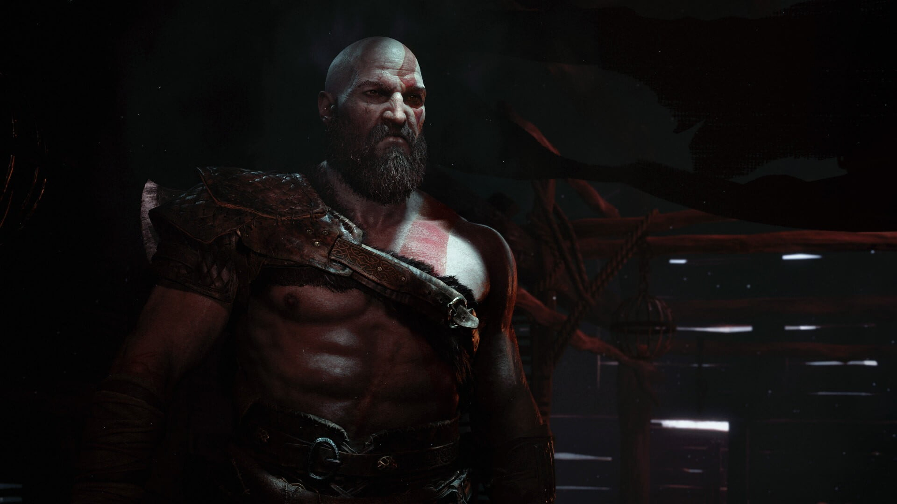

God Of War IV (2018)

God of War (also known as God of War IV) is the sequel to God of War III as well as a continuation of the canon God of War chronology. God of War is the eighth installment in the franchise overall.
Unlike previous installments, this game focuses on Norse mythology and follows an older and more seasoned Kratos and his new son Atreus in the years since God of War III. The game released on April 20, 2018, and is exclusive to the PlayStation 4. 1. A sequel, God of War: Ragnarök, is in development.
Story
Many years have passed since Kratos took his vengeance against the Olympian gods. Having survived his final encounter with his father Zeus, Kratos has since travelled to Midgard in Ancient Norway and now lives with his young son Atreus in the world of the Norse gods, a savage land inhabited by many ferocious monsters and warriors. In order to teach his son, whose mother (and Kratos's second wife) has recently died, how to survive in such a world, Kratos must master the rage that has driven him for many years and embrace his newfound role as a father and a mentor.
characters
- Kratos: The protagonist of the game. After the events of God of War III, Kratos seemed to have moved to Scandinavia and has started a family. He has become older and wiser, and he has better control over his temper, his actions are no longer simply based on rage and anger, and he shows moments of regret at lashing out. However, he does this to discipline his son and tells him that not to be sorry, but be better.
- Atreus: The son of Kratos and Faye, Atreus is a young boy who accompanies Kratos on his journey. He is taught how to hunt early in the game and is shown to be impulsive and undisciplined. He has the ability to read runic writings and is more knowledgeable about the world and its inhabitants than Kratos. He is unaware of the god status of Kratos. He is eventually revealed to be also named Loki, the mythological God of Mischief.
- Baldur/The Stranger: The main antagonist of the game. A man who attacks Kratos at his own home. He is tattooed with runes which gives him the strength equal to Kratos. Later, he is revealed to be Baldur, the son of Odin and Freya who was enchanted with invulnerability with the side-effect of being incapable of feeling sensations, pain or pleasure.
- Faye: The mother of Atreus and second wife of Kratos. She dies shortly before the events of the game.
- Jörmungandr: Also known as the World Serpent, this mythical creature is the last of the Jötnar and is discovered by Kratos and Atreus in the Lake of Nine in Midgard. He has a fierce hatred for Thor and the two are destined to kill each other during Ragnarok.
- Freya/The Witch in the Woods: Encountered shortly after Kratos and Atreus embark on their adventure. She immediately senses that Kratos is a god. She assist the pair on their adventure, assisting them in traveling between worlds. Later, she is revealed to be Freya, one of the Vanir gods and ex-wife of Odin who banished her to Midgard and left her incapable of leaving or harming others and also robbed her of her Valkyrie abilities.
- Sindri and Brok (Huldra Brothers): These dwarf brothers are encountered many times through the game and are renowned blacksmiths, having forged Leviathan and Mjölnir, the hammer of Thor. The two have renounced their formal partnership before the events of the game. They provide upgrades for Kratos' and Atreus' weapons and armor throughout the realms.
- Magni and Modi: The sons of Thor. They help their uncle Baldur in his quest to find someone and as a result come into conflict with Kratos and Atreus.
- Mimir: The figure of expansive knowledge and wisdom who claims to be the smartest man alive. He was banished to Midgard and sealed in a tree by Odin. Kratos cuts his head off and has it reanimated, after which he starts serving as the guide of Kratos and Atreus.
- Valkyries: Female entities who take the warriors that were killed in battle to Valhalla. There are a total of nine Valkyries, including their queen Sigrun.
- Thor: God of Thunder, son of Odin, father of Modi and Magni and half-brother of Baldur. He appears in the secret ending of the game, conjuring a thunderstorm and lightning over Kratos' house and issuing a fight between him and Arteus.
- Odin: The unseen but overarching antagonist of the game, he is the Allfather and King of Asgard as well as the Aesir gods. He is the father of Thor and Baldur, ex-husband of Freya and grandfather of Modi and Magni. He is noted to be responsible for the majority of the events of the game as he targets Kratos because of his fear towards him.
Weapons
- Leviathan Axe: Kratos's primary weapon is a one-handed battle axe with frost magic properties. Leviathan can be immediately recalled by Kratos after being thrown. The axe originally belonged to Faye, a Jötnar and the wife of Kratos and mother of Atreus. The brothers Sindri and Brok crafted the axe long ago and assist Kratos in upgrading it, giving it higher strength and, with the right skills, the ability to freeze and slow down enemies.
- Kratos' Fists: Kratos's uses his fists in unarmed combat and can perform multiple hit combos.
- Talon Bow: Atreus' primary weapon is a magical bow and arrows. The bow has the ability to summon spectral animals to perform attacks and assist Kratos in combat. Later on, it can gain the ability to weaken or shock enemies, among other things when used in various parts of the environment.
- Guardian Shield: Kratos has a gauntlet that transforms into a circular shield for parrying blows and wide-ranged attacks. The shield can be used to block attacks, projectiles, and a well-timed block can parry enemies' attacks. The shield can be upgraded to perform powerful slams and area-of-effect attacks.
- Blades of Chaos: Midway through the game, Kratos returns to his cabin and reclaims his trademark weapon from the previous games. The blades, while weaker, offer wider and faster attacks than the Leviathan Axe to make up for it. They also channel the fire element, making them effective against Hel-Walkers and other enemies resistant to the axe's frost element. Upgrades to them will increase their runic power and give them the ability to burn enemies, sapping their health.
Comments